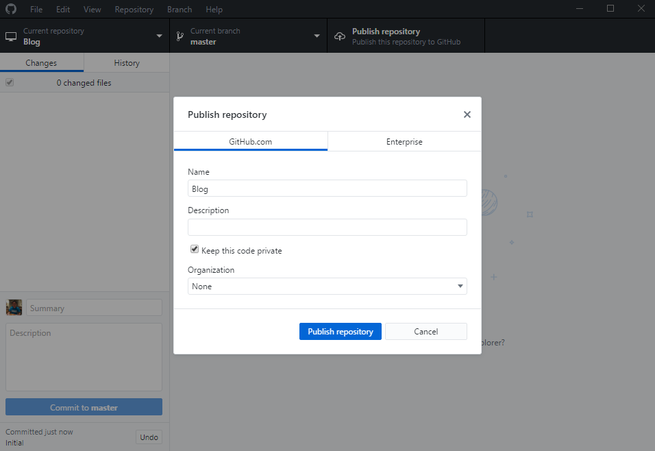
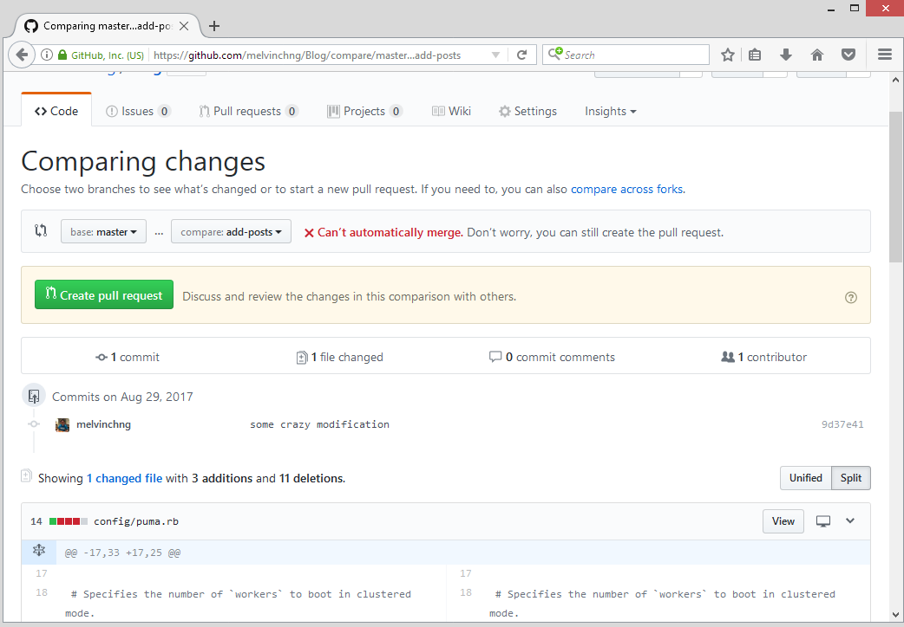

Last modified: Thu Aug 16 2018 22:49:02 GMT+0800 (Malay Peninsula Standard Time)
Chapter 3. Version Control: Github
Now, we can see that it is getting harder and harder to keep track of what we have created, modified, and deleted. To solve this, we are going to use Git. Git is one of the Version Control system that allows you to keep track of your code changes.
3.1 Git
Git is a version control system that keep track of the changes in your computer files and you may work together with multiple people. Although it is designed for software development, you can still use it to keep track of your files changes.
There are two ways of achieving the same goal: GUI (Graphic User Interface) and CLI (Command Line Interface). For beginner, my recommendation for you is to choose GUI method as it is easier to illustrate. Depending on the difficulty of performing certain tasks, it is easier to work on both GUI and CLI. Both GUI and CLI methods will be discussed.
Bitbucket and Github are two of the online project hosting that use Git. In this Chapter, Github will be discussed. You may choose to use other services, but Heroku (a platform that we can host our Web Application) has a good integration with Github.
3.2 Github Desktop
To begin, head to Github and sign up for an account. Download the Github Desktop and install it to your machine. Use the default setting provided in the installer. The Github desktop Desktop application will install CLI tool on your machine.
Unfortunately, the Github Desktop is only available for Mac and Windows platform. Linux users have to use the CLI. Linux users may have to use GitKraken as an alternative tool if you choose to use GUI interface. I have never used GitKraken before and you may have to look for alternative source to get started. Please stick with Github Desktop if you are using Windows and Macintosh machine.
Launch the Github Desktop and login to your account that you have just created. Figure 3.2.1 shows Github Desktop user interface. This is the latest Github Desktop application as of August 2017 and you may find an older version of Github Desktop user interface in this tutorial.

Figure 3.2.1: Github Desktop Application
3.3 Create a New Repository
A new repository can be created from Github Desktop or from Github Website. It cannot be created in CLI. If you are planning to use CLI to create your first commit, you have to create a new repository from Github Website and obtain a HTTPS link to add to the CLI.
Figure 3.3.1 shows the operation of creating a new Github repository in Github Desktop. Add your project by going to “File” > “New Repository”. Then, and press the “browse” button and select your root directory of your application. Press “OK” when you are selecting your root directory. Insert a name for your application and press “create” to create a new repository. Now, you will see that your project is added to “Current repository” tab.
Figure 3.3.1: Adding a project to Github Desktop
Figure 3.3.2 shows a project is added to Github desktop successfully. The project is listed under “Current repository” tab.
Figure 3.3.2: Project added to Github Desktop
Insert a short message in the “Summary” field and select “Commit to master”. Select “Publish” tab to publish your application. If you a Premium account in Github, you will have an option to make the repository private. Otherwise, your repository will be public and everyone has access to your work.

Figure 3.3.3: Publishing project to Github
All the operations in this section can be performed using command line interface (CLI). However, you must still create a repository on Github website before you are able to perform your first commit. When you are using CLI, do make sure that you are at the root directory of your application before performing any of the commands listed from the website. The typical operation using a CLI tool for adding a new project to Github is as below. Operations below are illustrated in Figure 3.3.4.
- Create a Github repository from Github.com
- At the root directory of your application, use the command
git initto initialize. - [OPTIONAL] Use the command
git statusto check the current status of the directory. - To add all the files to commit, use the command
git add .(include a dot). - Commit to your repository by using the command
git commit -m "First commit" - From your repository, obtain your HTTP git link by pressing "clone or download". Switch to "Use HTTPS" to obtain a link that look like this:
https://github.com/YOUR-USERNAME/YOUR-REPOSITORY.git. - Add the link to your local repository by using the command
git remote add origin https://github.com/YOUR-USERNAME/YOUR-REPOSITORY.git. - Now, commit to master branch by using this command
git push -u origin master. - You may ask to enter your credential in order to commit to the repository.
Figure 3.3.4: Credential is required after the command git push -u origin master is used.
Figure 3.3.5 shows all the file(s) is added to my repository successfully.
Figure 3.3.5: File(s) added to repository successfully
3.4 Github Website
Now, head to Github and log in to your account. You will see your app that you have created is listed under “Your repositories” table located on the right. Figure 3.4.1 shows that the app I created is shown under “Your repositories”.
Figure 3.4.1: App created shown in “Your repositories” table
Press your repository that you created and a similar page will show in Figure 3.4.2. The page will show all the information about your application.
Figure 3.4.2: MyApp in my Github repository
You will see all your commits by pressing “commits”. Figure 3.4.3 shows all the changes (commits) of MyApp.
Figure 3.4.3: All changes of MyApp
You can easily go back to previous commit and view the files. To do so, press “Initial” and a screenshot below will show all the files and lines that you added in the commit. Section highlighted in green means newly added files while red means deleted files or lines. Figure 3.4.4 shows my “initial” commit
Figure 3.4.4: My “initial” commit
To browse all the files in this commit, press “Browse files”. Of course, it will look the same right now as our initial commit is similar to our first commit. In the future when you have more commits, you are able to browse the files in the specific commit. In short, it is more like a time machine where you can go back and see all the changes and download the entire version.
3.5 Add Collaborators
To add collaborators in your project, go to “Setting” and press “Collaborators” on the left. Add the specific member by username, full name, or email address. Figure 3.5.1 shows the Collaborators section under “MyApp”.
Figure 3.5.1: Add collaborates to your project.
3.6 Changes and Deletions
Changes and deletions of files and lines of code can be seen easily in the Github Desktop app and Github Website (Chapter 3.7). Figure 3.6.1 shows a example of a file being modified. On the left section, we can see that the file Gemfile is changed. On the right section, line 11 and 12 are modified by having the text deleted and moved or added to line 40 and 41 as indicated in green.
Figure 3.6.1: Changes and Deletions of Gemfile
To commit your changes to your Github repository, insert a short summary and commit to master. The summary and description section are the place where you should provide information about the changes that you have done. This will let others to keep track of each commit.
Figure 3.6.1: Adding summary before publish/commit
After “Commit to master” is pressed, we have to upload the changes. This can be done by pressing the “Push origin” tab. The value “1” that shows next to “Push origin” indicates how many commit(s) has not been uploaded.
Figure 3.6.2: Commit that has not been uploaded to cloud
Screenshot below shows all the commit has been synced to Github.
Figure 3.6.3: Committed and synced successfully
3.7 History
Git keeps track of every changes we made. There are two ways of viewing the changes: through Github Desktop or Github Website. Figure 3.7.1 shows the history in the Github Desktop while Figure 3.7.2 shows the history in the Github Website.

Figure 3.7.1: History in Github Desktop
To view the history in Github website, head to your Github repository and press on the “commits”. Figure 3.7.2 shows the Github repository.
Figure 3.7.2: Github repository
Figure 3.7.3 shows the two commits that I have made. To view the changes of the commit, press on the name of the commits (“Moved sqlite” or “Initial”).
Figure 3.7.3: Two commits show in the repository
Figure 3.7.4 shows the addition and deletion that we made as discussed in Chapter 3.6. To get the snapshot of the repository, press “Browse files”. You can either view the files or download a copy of the snapshot at the screen.
Figure 3.7.4: Changes for “Moved sqlite”
3.8 Branches
Branch can be very complicated. The discussion in this section is the basic. A secondary source may be required. The following paragraphs are quoted directly from Github.
"A branch represents an independent line of development. Branches serve as an abstraction for the edit/stage/commit process discussed in Git Basics, the first module of this series. You can think of them as a way to request a brand new working directory, staging area, and project history. New commits are recorded in the history for the current branch, which results in a fork in the history of the project.
The git branch command lets you create, list, rename, and delete branches. It doesn’t let you switch between branches or put a forked history back together again. For this reason, git branch is tightly integrated with the git checkout and git merge commands."
The following paragraphs are quoted directly from Atlassian.
"In Git, branches are a part of your everyday development process. When you want to add a new feature or fix a bug—no matter how big or how small—you spawn a new branch to encapsulate your changes. This makes sure that unstable code is never committed to the main code base, and it gives you the chance to clean up your feature’s history before merging it into the main branch.
 Figure 3.8.1: A repository with three branches:
Figure 3.8.1: A repository with three branches: little feature, master, and big feature.
For example, the diagram above visualizes a repository with two isolated lines of development, one for a little feature, and one for a longer-running feature. By developing them in branches, it’s not only possible to work on both of them in parallel, but it also keeps the main master branch free from questionable code."
Based on Figure 3.8.1, we can see that little feature branch is behind of master branch while big feature is ahead of master branch. The big feature branch can be merged into master branch easily using merge commands.
Assuming that you have a master branch right now and you would like to add a feature to your application. There are two ways to create a branch: through Github website or command line interface (CLI).
To create a branch from Github Website, head to your Github repository and press on the "Branch" and insert a name that does not exists to create a branch. The operation is illustrated in Figure 3.8.2.
Figure 3.8.2: A branch name add-notes is being created
After the branch is created, we have to switch to the branch add-notes. Figure 3.8.3 shows the branch is set to add-notes. To commit the change we made to the branch, add a name to the summary section and commit the changes. Based on the Figure 3.8.3, instead of "Commit to master", we can see that it has been changed to "Commit to add-notes".
Figure 3.8.3: add-notes is the current branch that we are using
To create a branch using CLI, open a terminal window and point to your root directory of your application. Then, we use the command git branch YOUR-FEATURE-NAME. For this case, we are going to use the command git branch add-notes.
Figure 3.8.4: git branch command is used to create a branch.
Figure 3.8.4 shows the root directory of my application is Blog and a branch named add-notes is created successfully. The typical workflow of branching is illustrated in the steps below. Do note that you have to be at the root directory of your application in order to perform the operations below.
- Create a new branch name add-notes using the command
git branch add-notes - Switch to add-notes branch by using the command
git checkout add-notes - Perform all your modifications
- Add all the files that have been changed by using the command
git add .(include the dot). - Commit the change by using the command
git commit -m "added notes". - Push the code to the cloud by using the command
git push --set-upstream origin add-notes.
Figure 3.8.5 shows a screenshot of a the operation shown in Table 3.8.1. From the figure, we can see that the new branch is created and all the changes are committed successfully.
Figure 3.8.5: Screenshot of a workflow of a branch.
3.9 Merge
We use the merge feature to merge from branches that we create to master branch. Merging could be very challenging depending on the modification that you have done on branch and master branch. Merging may leads to conflict on the changes that you or your team members made. Refer to Chapter 3.10 Conflict for more information about conflict.
As usual, all (or most of) the tasks can be achieved via GUI and CLI methods. For GUI method, it can be done on Github website. To begin, head to your Github repository and create a new pull request by pressing on the button "New pull request". Figure 3.9.1 illustrates the operation discussed.
Figure 3.9.1: Creating a pull request
Based on Figure 3.9.2, we can see that we are asked to compare the changes between the two branches that we wish to create a pull request.
Figure 3.9.2: Compare changes between two branches
Select any of the branches that you wish to compare the master branch with. Figure 3.9.3 shows that there is no conflict between the master branch and add-notes branch. Well, you are in luck!
Figure 3.9.3: Able to merge without having any conflict
To merge, we first need to create a pull request. Create a pull request by pressing the green "Create pull request" button. Figure 3.9.4 shows the pull request is opening. Insert some notes and create your request.
Figure 3.9.4: Creating a pull request
Figure 3.9.5 shows a pull request is created. To merge into the branch, use the "Merge Pull Request" button. Insert come notes and complete the "merge request" by inserting a short summary about the merge.
Figure 3.9.5: Pull request created
Figure 3.9.6 shows a merge request is completed and merged.
Merging can also be done in CLI. Assuming that we have an application called Blog we have a branch named add-notes and we would like to merge into the master branch The typical workflow of branching is illustrated in the steps below. Do note that you have to be at the root directory of your application in order to perform the operations below. Figure 3.9.7 illustrate the operation flow below in real environment.
- Switch to master branch by using the command
git checkout master. - Merge
add-notestomasterbranch by using the commandgit merge add-notes. - Push the changes of
masterbranch by using the commandgit push -u origin master.
Figure 3.9.7: Merge is completed in CLI.
3.10 Conflict
A conflict usually happens when the same line(s) of code of the same file is modified in both master and other branch. In a simpler explanation, the same line of code is modified by two users at the same time will result in conflict. If modification is made on different files at the same time, conflict will not happen. Table 3.9.1 shows the the changes and histories of a file, hello.txt.
Table 3.9.1: An illustration of a typical workflow between one or more users
| Row | Name of Branch | Created / Modified At | Changes | Content | Conflict |
|---|---|---|---|---|---|
| 1 | Master | Day 1 | Created hello.txt |
ABC DEF GHI | - |
| 2 | Branch-1 | Day 2 | Created branch | ABC DEF GHI | - |
| 3 | Branch-1 | Day 2 | Modified content | ABC DEF | - |
| 4 | Branch-1 | Day 2 | Merge to Master | ABC DEF | No |
| 5 | Master | Day 2 | - | ABC DEF | - |
| 6 | Master | Day 3 | Modified content | ABC | - |
| 7 | Branch-1 | Day 3 | Modified content | ABC DEF GHI | - |
| 8 | Branch-1 | Day 4 | Merge to Master | ??? | Yes |
From Table 3.9.1, we can see that the content of master (row 5) is modified and committed ahead of branch-1 (row 6). Then, a change is made on branch-1 and when it is merging into master, they conflict. There are two ways of resolving a conflict: through Github Website or CLI and text editor on your local machine.
Figure 3.10.1 shows a pull request in Github Website that contains a conflict and unable to merge automatically.

Figure 3.10.1: Unable merge due to conflict
We are still able to create a pull request. However, we have to resolve the conflict before we are able to merge into the master branch. Figure 3.10.
Figure 3.10.2: Resolve conflict option shown
To resolve the conflict from the Github website, resolve the conflict using the option available. Figure 3.10.3 shows one of the 3 conflicts that is in config/puma.rb. Resolve the conflict by carrying out the appropriate editing. The conflicted sections are shown using <<<<< symbols`
Figure 3.10.3: Conflicts shown in config/puma.rb.
Figure 3.10.4 shows that the conflicts are removed, no longer having <<<<<< master or <<<<<< add-posts symbols.
Figure 3.10.4: Conflicts resolved in config/puma.rb.
After the changes are done, resolve the conflict by pressing on "Mark as resolved" button. Then, press on the "commit merge" that you see after the button is changed. Figure 3.10.5 shows it is ready to merge. Press the "commit merge" to complete the merge.
Figure 3.10.5: Conflicts resolved in config/puma.rb.
Now, we are able to "Merge pull request". Press on "Merge pull request", insert some text and "confirm merge".
Resolving a conflict can also be done in CLI. Assuming that we have an application called Blog we have a branch named add-posts and we would like to merge into the master branch. However, there is a conflict while merging to master branch. The typical workflow of resolving a conflict issue in CLI is discussed in the steps below. Do note that you have to be at the root directory of your application in order to perform the operations below. Figure 3.10.6 illustrate the operation flow below in real environment.
- Switch to master branch by using the command
git checkout master. - Merge
add-poststomasterbranch by using the commandgit merge add-posts. - Resolve the conflict in your text editor.
- Add all the files that have been changed by using the command
git add .(include the dot). - Commit the change by using the command
git commit -m "resolved conflict". - Push the changes of
masterbranch by using the commandgit push -u origin master.
Figure 3.10.6: The process of resolving a conflict
As a bonus information, we can also see the conflict information part in Github Desktop. Figure 3.10.7 shows that the conflicts are shown in Github desktop. It can be seen easily with the symbol <<<<<< master or <<<<<< add-posts.
Figure 3.10.7: conflict shown in Github Desktop
If you are using Visual Studio Code Text Editor (more information can be found in the earlier part), you can fix the code easily by using the available options shown in the text editor in the file(s) that has conflict: Accept Current Change, Accept Incoming Change or Accept Both Change. Figure 3.10.8 shows that the conflicts are shown in Github desktop. It can be seen easily with the symbol <<<<<< master or <<<<<< add-posts.
Figure 3.10.8: Option to resolve a conflict automatically